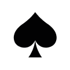

區塊鏈牛牛秉承傳統的牛牛遊戲，特別加上SHA-256技術驗證卡牌，以確保遊戲公平公正。遊戲使用一副共52張撲克牌(不計大、小王)，每局向「庄」、「閒1」、「閒2」、「閒3」四家各派發5張牌，比較牌型/牌值大小決定勝負
玩家可押注「庄」的「平倍」及「翻倍」，以及「閒」的「平倍」及「翻倍」。若押注「閒」，而所押「閒」家的牌型大於「庄」，則獲勝；若押注「庄」，而「庄」的牌型大於該「閒」家，則獲勝
玩家可選擇押注以下投注區：
- 「庄1」：平倍、翻倍 （即「庄」贏「閒1」)
- 「庄2」：平倍、翻倍 （即「庄」贏「閒2」)
- 「庄3」：平倍、翻倍 （即「庄」贏「閒3」)
- 「閒1」：平倍、翻倍 （即「閒1」贏「庄」)
- 「閒2」：平倍、翻倍 （即「閒2」贏「庄」)
- 「閒3」：平倍、翻倍 （即「閒3」贏「庄」)
- 「平倍」：「庄」與「閒」平倍博弈，派彩不受牌型影響，按平倍賠率計算
- 「翻倍」：「庄」與「閒」翻倍博弈，派彩根據勝方牌型，按翻倍賠率計算
比較大小，以及「平倍賠率」與「翻倍賠率」，請見以下詳細說明
「庄」與各「閒」家比較大小決定贏輸；在比較過程中，先比較牌型，再比較牌值，最後比較花色*(請見例)
- 牌型大小：K、Q、J為10點，其餘根據牌面點數計算
五公 (任意5張K、Q、J) > 牛牛 > 牛9 > 牛8 > 牛7 > 牛6 > 牛5 > 牛4 > 牛3 > 牛2 > 牛1 > 無牛
- 牌值大小：K > Q > J > 10 > 9 > 8 > 7 > 6 > 5 > 4 > 3 > 2 > A
- 花色大小：黑桃 > 紅心 > 梅花 > 方塊
>
>
>
*例：「庄」與「閒1」同為牛8，則從雙方最大的牌開始比較；若雙方最大的牌同為K，則繼續比較花色，如 「閒1」 黑桃K ＞ 「庄1」梅花K，「閒1」贏